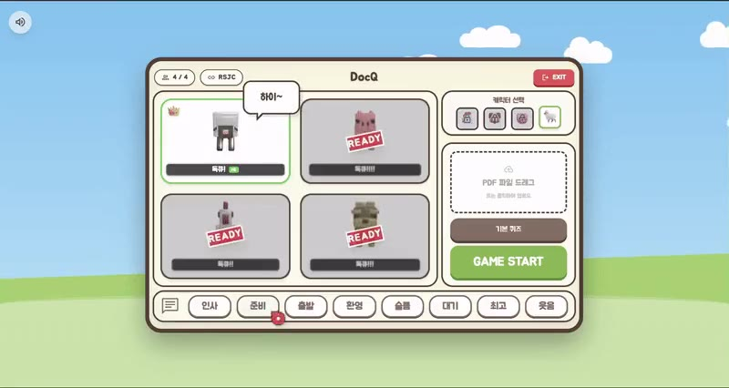
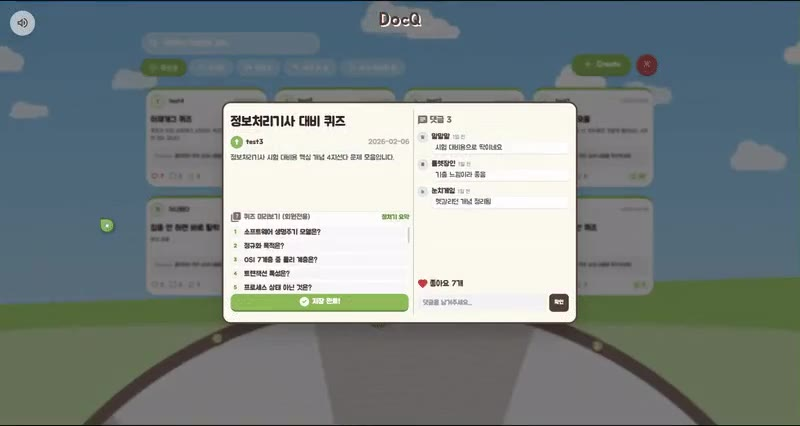
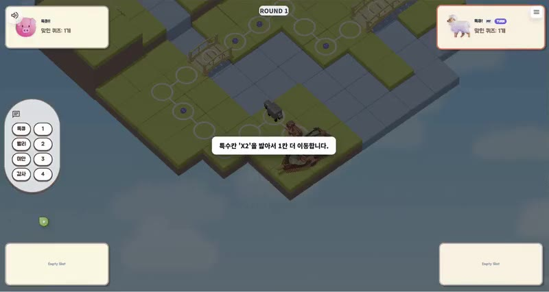

Period2026.01.06 – 02.13
Team6명 (FE 3)
Role비주얼·UX 방향 · FE · 3D 에셋
Built withVue 3 · Three.js · Blender
AwardSSAFY 공통 최우수상
DocQ
PDF 문서를 AI가 퀴즈로 바꾸고, 최대 4명이 3D 보드게임으로 푸는 실시간 멀티플레이 서비스
'다 읽었다'와 '다 안다'는 다릅니다. 읽은 문서를 이해했는지 혼자 확인하는 지루한 과정을 친구와 겨루는 게임으로 바꾸는 것이 목표였습니다. 저는 이 게임이 어떤 모습이고 어떻게 느껴질지를 정하는 역할을 맡았습니다.
정한 것
- 동화책 톤. 혼자 하는 공부가 아니라 친구와 하는 보드게임으로 느껴져야 했습니다. 나무 패널, 파스텔 하늘, 둥근 버튼으로 보드게임 상자를 여는 느낌을 잡고 로비·대기실·커뮤니티 전체에 적용했습니다.
- 나무색 한 가지로 글자와 테두리를. 검정 대신 짙은 나무색
#5D4037을 글자와 테두리에 함께 써서 화면 전체가 한 재질로 보이게 했습니다. - 누르면 들어가는 버튼. 주 버튼은 아래쪽 5px 그림자로 두께를 만들고, 누르면 그 두께만큼 내려앉습니다. 아래 견본에서 눌러볼 수 있습니다.
- 초록 하나를 주 색으로. 나무색 바탕 위에서 초록은 GAME START 같은 주 버튼과 선택된 항목에 써서, 다음에 누를 곳이 먼저 보이게 했습니다.
대기실 화면 구성

오른쪽 열은 위에서 아래로 캐릭터 선택 → PDF 올리기 → GAME START 순서입니다. 시작하려면 해야 하는 일의 순서와 화면의 순서를 맞췄습니다.
컬러 토큰
| 색 | 역할 | 쓰인 곳 | 코드 내 사용 |
|---|---|---|---|
| #5D4037 | Wood / Dark | 본문 글자, 패널과 버튼 테두리 | 112회 |
| #8D6E63 | Wood / Mid | 보조 버튼, 보조 글자 | 82회 |
| #BCAAA4 | Wood / Light | 입력창과 카드 테두리 | 58회 |
| #D7CCC8 | Wood / Pale | 비활성 버튼, 옅은 바탕과 테두리 | 52회 |
| #FFF8E1 | Paper | 패널 바탕 | 34회 |
| #7CB342 | Go | 주 버튼, 선택 표시 | 53회 |
| #558B2F | Go / Deep | 주 버튼 테두리와 두께 | 39회 |
| #EF5350 | Stop | 나가기 같은 경고성 버튼 | 16회 |
프로젝트 당시에는 토큰 파일 없이 화면마다 값을 직접 썼습니다. 이 표는 프론트엔드 코드에서 실제로 쓰인 값을 세어 역할별로 다시 정리한 것입니다. 글꼴은 Jua 한 가지, 모서리는 8 · 12 · 16 · 20 · 24px와 알약형(999px)을 썼습니다.
컴포넌트 견본
PDF 파일 드래그
위 토큰으로 이 페이지에 다시 그린 견본입니다. 실제 서비스에는 이 밖에 알림 모달, 확인 모달, 방 만들기·입장 모달, 유저 카드, 커스텀 커서를 만들었습니다.


공통 최우수상SSAFY 14기 공통 프로젝트
22 / 24건팀이 받은 유저 피드백 중 반영한 수